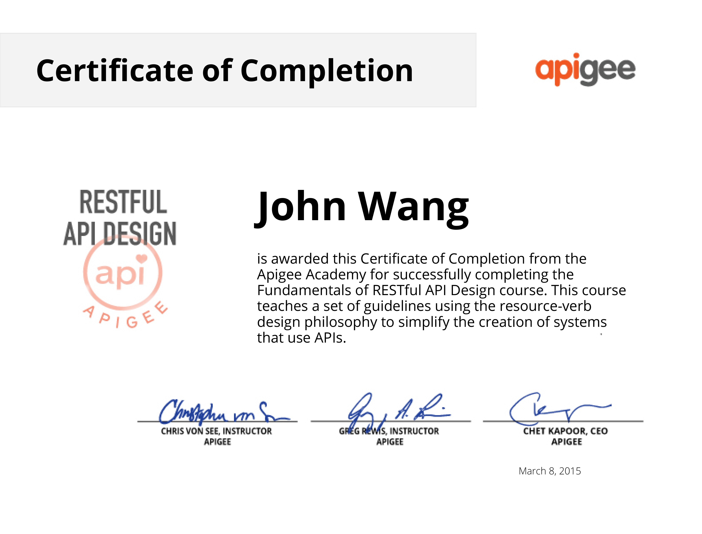
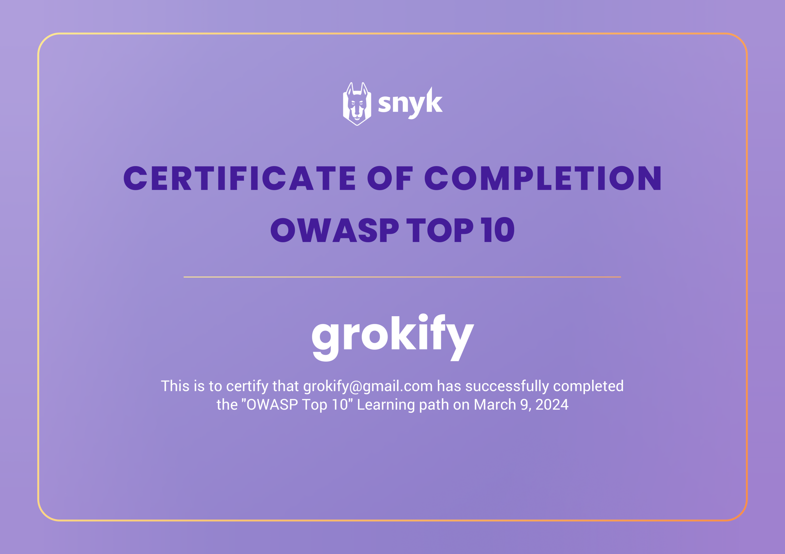
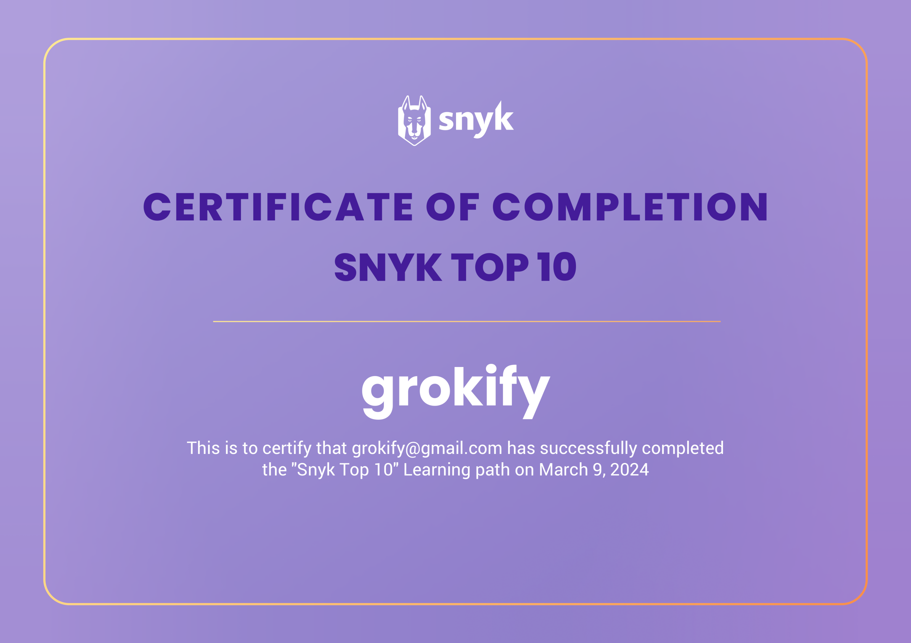
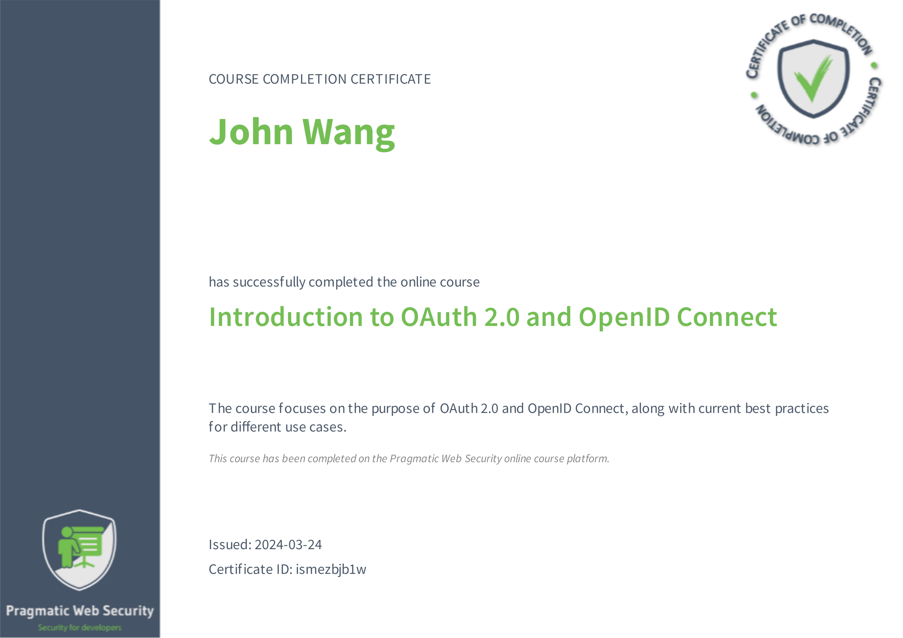

John's API Certificates
Design (1)
Fundamentals of RESTful API Design from Apigee

Security (4)
API Security Architect from API Academy
OWASP Top 10 from Snyk

Snyk Top 10 from Snyk

Security for Developers from Snyk
OAuth 2.0 and OpenID Connect (OIDC) (2)
Introduction to OAuth 2.0 and OpenID Connect from Pragmatic Web Security by Dr. Philippe De Ryck

OAuth2 and OpenID Connect: Easy Now from Pluralsight by Roland Guijt

Programming (1)
Rest API (Intermediate) from HackerRank